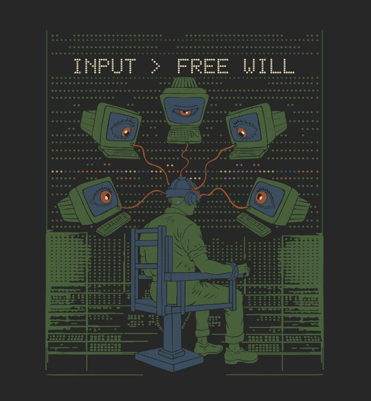
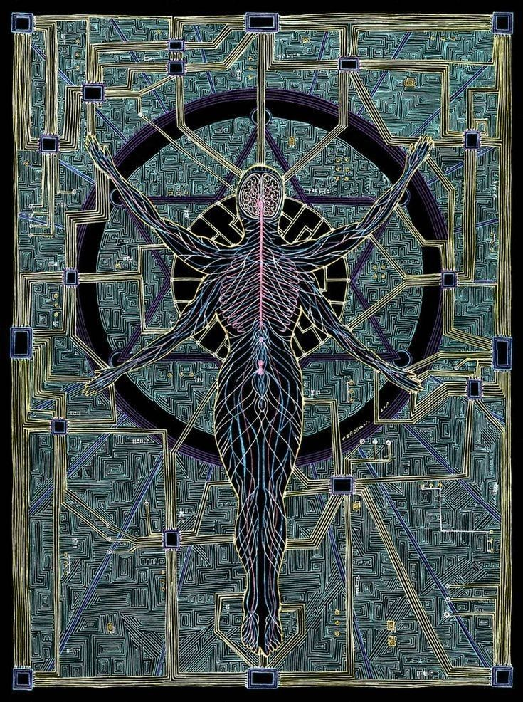

BLOCKS IN FLIGHT
One entry per block, from proposal to signoff. Nothing is listed here until there is RTL and a testbench in the repository — proposals sit in the queue below until somebody owns them.

A digital array of leaky integrate-and-fire neurons with event-driven routing between them. Spikes instead of tensors, so there are no multipliers in the datapath and the whole power argument rests on how sparse the traffic really is.

Software-defined autonomous mission vehicle. FPGA-native deterministic edge compute, formal safety, 3-tier HIL digital twin.
[ ▸ OPEN CASE FILE ]
The stack in fabric: MAC interface, ARP, IPv4 and a TCP state machine with retransmission, all in hardware with no soft core in the data path. It either holds line rate on a gigabit PHY or it does not count.
[ ▸ OPEN CASE FILE ]A weight-stationary grid of int8 MAC cells with tiled GEMM scheduling and a double-buffered activation store. The interesting engineering is the memory schedule; the multipliers are the easy part.

Hardware for the algorithms that outlive RSA: lattice arithmetic, NTT butterflies, constant-time control and a sampler that does not leak through timing. The threat model is a machine that does not exist yet, which makes the constant-time argument the whole project.
[ ▸ OPEN CASE FILE ]
Instrumentation for the grid: a six-channel interpolated-DFT front end with CORDIC magnitude and phase and ROCOF differentiation, wrapped in the reporting protocols a substation actually expects. No vendor IP anywhere in the chain.

[ Send me a paragraph on the second brain algorithm and it goes here verbatim. ]
[ ▸ OPEN CASE FILE ]
[ Send me a paragraph on the bitstream LLM and it goes here verbatim. ]
Attitude control in fabric instead of firmware: IMU fusion, a fixed-point rate loop and PWM generation with deterministic latency from sample to actuator. The argument for hardware here is jitter, not throughput.
[ ▸ OPEN CASE FILE ]Tick-to-trade in hardware: market-data feed parsing on the wire, an order book maintained in fabric and a decision path measured in nanoseconds. Every stage has to justify the cycle it costs.
[ ▸ OPEN CASE FILE ]Proposed blocks with a written spec and no owner. Claim one when you join — you get the spec, a mentor and bench time.